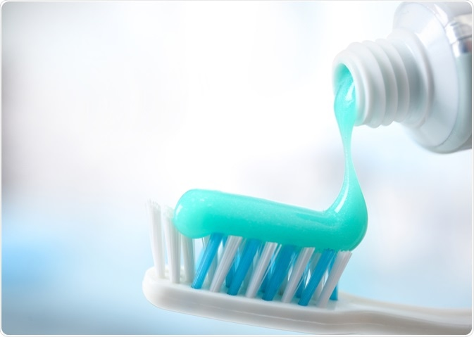

ဘယ်လိုသွားတိုက်ဆေးမျိုး ရွေးရမလဲ

သွားတိုက်ဆေးအားလုံးဟာ သွားကျန်းမာရေးကောင်းအောင် ထိန်းသိမ်းပေးဖို့ စီမံဖော်စပ်ထားတယ်ဆိုတာကို အားလုံးသိထားကြပါတယ်။
ဒါပေမဲ့ လက်ရှိ သုံးနေတဲ့သွားတိုက်ဆေးဟာ သင့်အတွက် မှန်ကန်တဲ့သုံးစွဲမှု ဟုတ် မဟုတ်ဆိုတာကို သင်သိပါရဲ့လား။
တကယ်တော့ သွားတိုက်ဆေးအမျိုးအစားတွေဟာ သင့်သွားကျန်းမာရေး လိုအပ်ချက်အပေါ်မူတည်ပြီး ကွဲပြားမှုရှိပါတယ်။
ဒါကြောင့် မှန်ကန်တဲ့သွားတိုက်ဆေးကို ရွေးချယ်သုံးစွဲနိုင်ဖို့ သိထားသင့်တဲ့အချက်တွေကို ဖော်ပြပေးလိုက်ပါတယ်။
၁။ သွားပိုးပေါက်တွေ မဖြစ်စေဖို့
အချိုတွေအစားများတဲ့အခါ အချိုရည်တွေသောက်သုံးတဲ့အခါ ပါးစပ်အတွင်းမှာရှိတဲ့ ဘက်တီးရီးယားတွေနဲ့ သကြားဓာတ်တို့ဓာတ်ပြုပြီး သွားပိုးပေါက်တွေဖြစ်စေမဲ့ အက်ဆစ်တစ်မျိုး ထွက်ပေါ်လာပါတယ်။ ဒီလိုအခါမျိုးမှာ ဖလူအိုရိုက် ပါဝင်တဲ့သွားတိုက်ဆေးတွေဟာ သွားပိုးပေါက်ဖြစ်ခြင်းမှ ထိထိရောက်ရောက် ကာကွယ်ပေးပါတယ်။
၂။ သွားတွေဖြူဖွေးစေဖို့
သွားတွေဖြူဖွေးစေချင်ရင်တော့ သွားမှာစွန်းထင်းနေတဲ့ အဝါကွက်အညိုကွက်တွေကို ဖယ်ရှားပေးနိုင်တဲ့ သွားတိုက်ဆေးမျိုးသုံးရပါမယ်။ များသောအားဖြင့် ဒီသွားတိုက်ဆေးတွေမှာ အရောင်တွေကိုတိုက်စားပစ်နိုင်ပြီး သွားတွေကို ဖြူဖွေးတောက်ပြောင်စေမဲ့ ဓာတုဗေဒပစ္စည်းတချို့ ပါဝင်ပါတယ်။Sensitive ဖြစ်ပြီး နာကျင်လွယ်တဲ့သွားပိုင်ရှင် သွားဖုံးပိုင်ရှင်တွေအတွက်တော့ မသင့်တော်ပါဘူး။
၃။ သွားကျောက်တည်ခြင်းမှ ကာကွယ်ရန်
သွားကျောက်တည်ခြင်းဟာ သွားတွေကို လုံးဝပျက်စီးသွားစေတဲ့အထိ ဖြစ်နိုင်ပါတယ်။ အချိန်ကြာလာတဲ့အခါ သွားချေးတွေဟာ မာကျောလာပြီး အလွယ်တကူရှင်းလင်းပစ်လို့ မရတဲ့သွားကျောက်တွေအဖြစ် ပြောင်းလဲသွားပါတယ်။ ဒီလို သွားကျောက်တည်ခြင်းကို ဖယ်ရှားပေးနိုင်မဲ့ သွားတိုက်ဆေးတွေမှာ Pyrophosphate နဲ့ Zinc citrates အစရှိတဲ့ ဓာတုပစ္စည်းတွေပါဝင်ပါတယ်။
၄။ သွားနှင့် သွားဖုံးများ ခဏခဏ ကိုက်ခဲတတ်ခြင်းမှ ကာကွယ်ရန်
တချို့လူတွေမှာ သွားနဲ့သွားဖုံးတွေ မကြာခဏဆိုသလို ကိုက်ခဲတတ်ကြပါတယ်။ ဒီပြဿနာအတွက် သွားဆရာဝန်က Sensitivity ကြောင့်ဖြစ်တယ်လို့ ယူဆခဲ့ရင် သင့်ကို Potassium nitrate, Sodium Flouride, Sorbitol အစရှိတာတွေ ပါဝင်တဲ့ သွားတိုက်ဆေးကို ညွှန်းပါလိမ့်မယ်။
ဒါကြောင့် သွားတိုက်ဆေးတစ်ဘူး ရွေးချယ်ဝယ်ယူတော့မယ်ဆိုရင် ဒီအချက်တွေကို သတိပြုပြီး သင့်တော်တဲ့ အမျိုးအစားကို ရွေးချယ်နိုင်ကြစေဖို့ ဖော်ပြပေးလိုက်ပါတယ်။
Source-Dr. KG